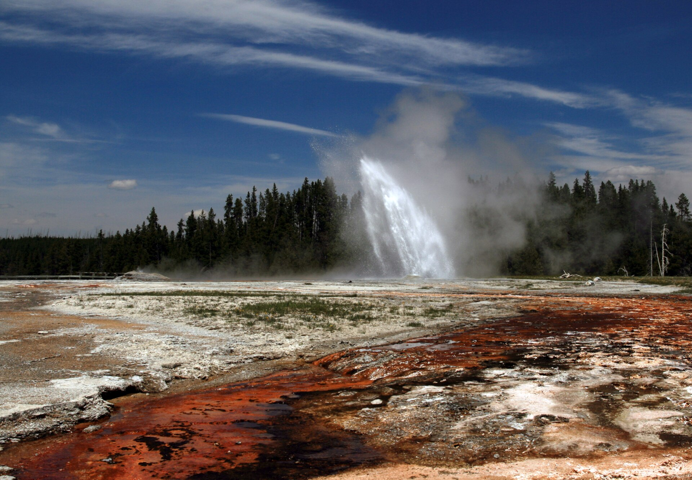

Yellowstone family loop · 5-day itinerary
See Yellowstone without treating a huge park as a quick checklist: one corridor at a time, protected driving windows and room for weather and family energy.

A park plan built around geography
Yellowstone spans a large area with five main entrances. This review draft protects the arrival day, assigns one main corridor to each full day and keeps road, weather and wildlife conditions as live checks.
Two adults and two school-age children; moderate pace, short walks, meal flexibility and a midday reset where the route allows.
West Yellowstone arrival base, then a protected south/east corridor before returning towards the departure edge; exact bases and roads require confirmation.
Road status, weather, wildlife conditions, operating dates, access, tickets, lodging, prices and supplier terms need live confirmation. A booking-hub link is intent only.
Planning boundary: dates and timings are illustrative. This page does not claim current availability, reservations, road conditions, prices or a completed booking.
Why this order works
Family brief: two adults and two children; moderate pace; mid-range budget; wildlife, geothermal landscapes and short walks. Yellowstone is not a compact city break, so the route values fewer, better-linked anchors over a list of every highlight.
Use an arrival base near West Yellowstone for a soft landing. Move the main park days east/south only after the family is settled, and protect the longest transfer as its own decision. The National Park Service notes that weather can change conditions and that services and roads vary by season.
Live-check rule: the NPS plan-your-visit, road-status, safety, accessibility and operating-date pages should be checked at decision time. If conditions change, preserve the base and switch the day’s anchor rather than pretending the original sequence is fixed.
Day 1 — Arrive through West Yellowstone and keep the first loop small
After arrival and luggage drop, use the late afternoon for a short West Yellowstone town loop and an early meal. If energy allows, make the visitor-information stop the day’s only planning anchor so the family can understand current access before committing to the park roads.
Why it fits: the arrival reserve stays intact instead of spending it on a distant first viewpoint.
Fallback: if arrival is late, stay local and move orientation to the next morning; confirm current opening and road information live.
Day 2 — West-side geothermal corridor: Grand Prismatic and Old Faithful
Leave after breakfast for the west/south corridor, using the Grand Prismatic Spring area as the main visual anchor and Old Faithful/Upper Geyser Basin as the later decision if road and family energy permit. Keep the sequence flexible rather than promising a fixed drive time; use boardwalk sections appropriate to the group and protect a meal/reset window between anchors.
Why it fits: the route follows one geographic direction and gives the family a clear stop condition.
Fallback: if parking, weather or fatigue disrupts the second anchor, stop after the first and return safely; check current road status, boardwalk access and eruption information.
Day 3 — Protected transfer towards the central/eastern base
Treat the West Yellowstone → central/eastern corridor as the day’s main task. Add one named roadside viewpoint or short walk only after the confirmed route, road conditions and luggage plan are clear; arrive with time for a simple dinner and a reset near the new base.
Why it fits: a huge park should not be crossed as background scenery between two fixed attractions.
Fallback: if the transfer is slower or roads change, remove the optional stop and protect arrival; never trade a safe arrival for a photo stop.
Day 4 — Canyon and wildlife decision day
Use the Grand Canyon of the Yellowstone as the principal anchor, selecting a short, confirmed viewpoint sequence rather than attempting every rim stop. Keep the later afternoon for a wildlife-viewing opportunity only if daylight, road conditions and family energy support it; wildlife sightings are never guaranteed.
Why it fits: the canyon gives the day a clear destination while the second block remains optional.
Fallback: shorten to one accessible viewpoint and return to base if weather or road conditions deteriorate; check current safety and access guidance.
Day 5 — Northbound exit buffer and final confirmed anchor
Keep the departure route deliberately light: choose one confirmed short stop, such as a Mammoth Hot Springs-area viewpoint when it is geographically and operationally aligned, then preserve the remaining window for the exit, fuel, food and onward connection.
Why it fits: the final day protects the airport/road/long-drive handoff instead of making a distant park anchor the critical path.
Fallback: if the exit is early or conditions change, skip the stop entirely and leave the park safely; recheck roads, weather and operating dates before departure.
Planning notes
Keep this route editable. Recheck current park roads, weather, wildlife guidance, operating dates, accessibility, tickets, lodging, prices and cancellation terms at decision time. Do not approach wildlife or leave designated boardwalks. Opening a booking-hub link records intent only; it does not prove a booking occurred.
Plan a trip
For this driving loop, use Road Trips. Turn your people, dates, pace, budget and interests into an editable plan you can review and share.